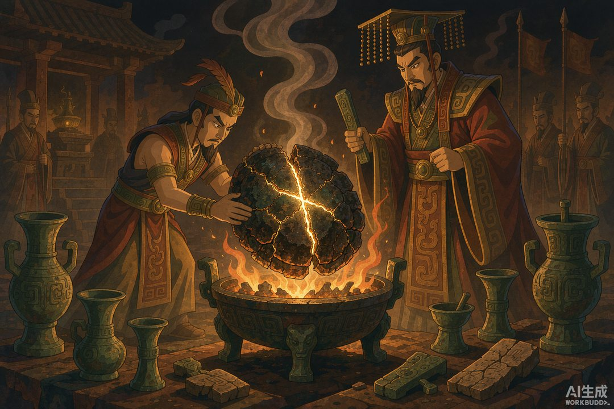
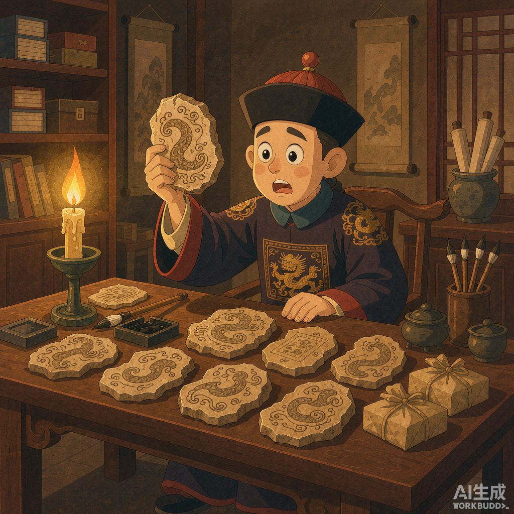
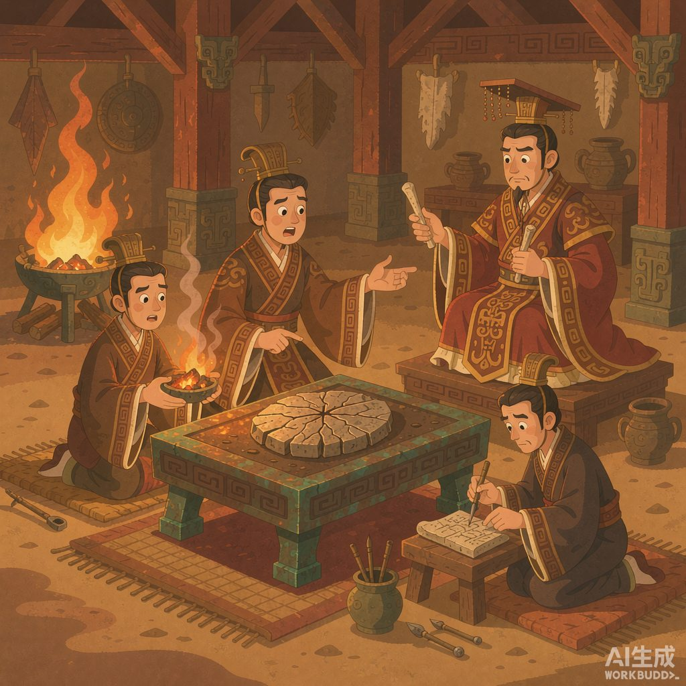

|
《信息传播那些事儿》· 卷一 · 08 |
|
甲骨文 —— 中国最早的成熟文字，是三千年前"和神的通话记录" |

▲ 裂纹一出现，就是"神回复"了（AI 生成示意图）
|
1899 年，一位清朝大学者抓中药，在药包里发现一味"龙骨"上刻着谁也不认识的字——中国已知最早的成熟文字系统，就这样在一堆药材里重见天日。 |
上一篇说到，颛顼"绝地天通"之后，通神成了少数人的垄断生意。到商朝，这门生意做到了极致——商王本人就是首席巫师，而且他干了一件前无古人的事：每次和神通话，都做记录，一个字一个字刻在骨头上，存档。
这些记录用的文字，就是甲骨文。今天我们知道：这是中国迄今所知最早的成熟文字系统。
一 | 一味"龙骨"牵出的档案库 |
1899 年，国子监祭酒（相当于最高学府校长）王懿荣在中药"龙骨"上发现了奇怪的刻痕，越看越像青铜器上的金文。他立刻大量收购，一年多收了 1500 余片，被后世尊为"甲骨文之父"。

▲ 一味药材，惊天下（AI 生成示意图）
讽刺的是，在此之前，这些刻字甲骨一直被当药材卖，许多被磨成了粉——三千年的档案，差点进了药罐子。后来学者循着线索找到河南安阳小屯村，殷墟浮出水面。一百多年下来，殷墟出土甲骨约 16 万片，单字约 4500 个，已释读约三分之一。
二 | 商王的"工作流程" |
商朝人信奉：祖先和神灵掌控人间一切。所以做什么都要问——祭祀、收成、征伐、田猎、出行、生育、生病，无事不卜。
而占卜是一个标准的多人协作流程：贞人（职业占卜官）先说明要问什么；助手用烧红的木炭灼烧甲骨背面的钻凿处；正面"啪"地裂出一条"卜"字形的纹；商王亲自看裂纹判吉凶；最后把问题和结果刻在骨头上。

▲ 贞人出题、卜人烧骨、商王解读（AI 生成示意图）
1931 年，甲骨学家董作宾提出"贞人说"，后来学者甄别出服务于商王的贞人多达 120 余位——那是一支成建制的官方"记者团"，负责提问、记录、归档。刻好的甲骨集中存入窖穴，堪称中国最早的图书馆和档案库。1936 年发现的 YH127 甲骨坑，一次就出土上万片。
三 | 写给谁的？——不是写给你的 |
这里藏着一个容易被忽略的细节：甲骨文不是写给老百姓看的。
它的收件人有两个：一个是神和祖先——这是"汇报工作"；另一个是后世的商王——这是"留档备查"。平民既看不到，也读不懂。占卜的"神回复"，说到底是裂纹的样子，而解读裂纹的权力，在商王手里。
也就是说，文字诞生的第一批应用场景里，根本没有"读者"这个角色。它是权力对上天的单向广播，加上一份写给未来的备忘录。"文字为人民服务"，那是几千年后识字率普及时才发生的事——这个弯，人类拐了整整三千年。
下一次你看新闻评论区里吵"这条信息到底是发给谁的"，可以想想甲骨：任何一种媒介刚出现时，服务的往往都不是大众。
📌 本篇数字锚点 | ||||||||||
|
|
🔔 下篇预告 |
本篇涉及的甲骨文发现史与数据转引自殷墟博物馆、河南省文物局及《寻古中国》等公开资料（甲骨约 16 万片、单字约 4500、已释读约三分之一，各来源统计口径略有差异）；配图为 AI 生成示意图。